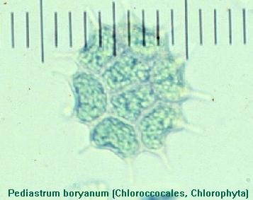
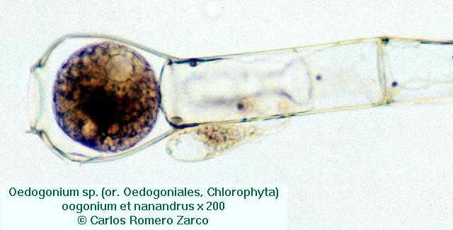
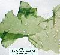
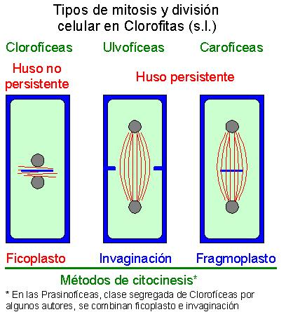
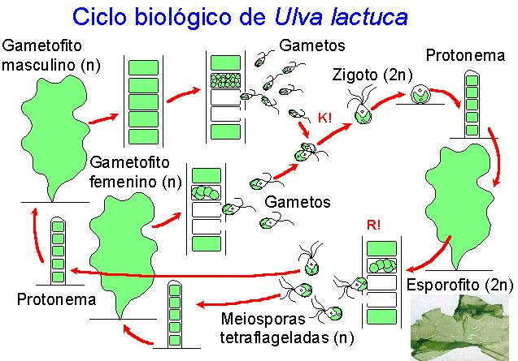
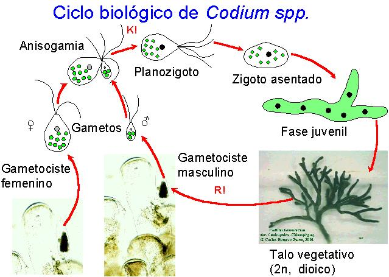
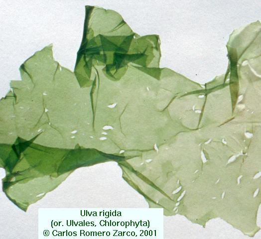
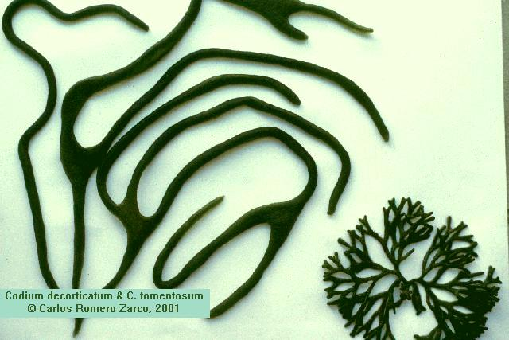
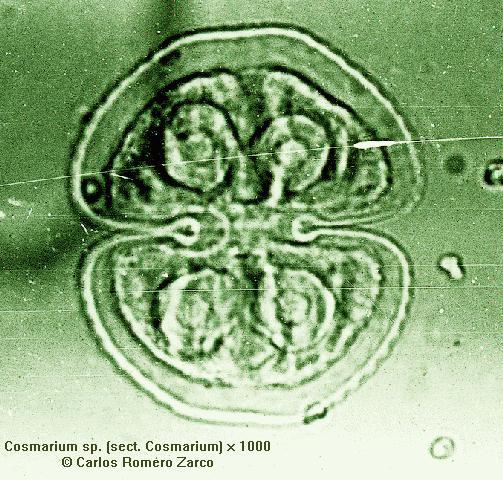
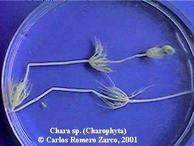

Cenobios planos con nº definido de células
Eudorina y Volvox
Cenobios esféricos formados por células flageladas




| División Clorofitas.- Las llamadas algas verdes, pertenecen al mismo grupo monofilético que las plantas terrestres (Briofitas y Cormofitas), compartiendo con estas varios caracteres bioquímicos. |  |
| Caracteres | Clorofíceas | Ulvofíceas | Carofíceas |
| 1) Mitosis |
M.N. persistente Huso colapsado en anafase |
Membrana
nuclear no persistente Huso persistente |
|
| 2) Citoquinesis |
Ficoplasto: banda de microtúbulos en el plano ecuatorial y placa celular | Invaginación de la PC | Fragmoplasto: vesículas del Golgi en el plano ecuatorial |
 |
|||
| 3) Ultraestructura de las células flageladas | Células simétricas Flagelos apicales orientados hacia adelante Citoesqueleto con 4 bandas de microtúbulos en cruz que conectan los cuerpos basales con el núcleo |
Anterozoides asimétricos Flagelos subapicales hacia un lado Citoesqueleto con una banda ancha de microtúbulos en posición lateral |
|
| 4) Ciclo biológico | Haplofásicos, con zigoto resistente y
meiosis zigótica Ej.: Chlamydomonas |
Haplodiplofásicos o diplofásicos, con zigoto de desarrollo inmediato y meiosis esporangial o gametangial. Ej.: Ulva, Codium | = que Clorofíceas |
| 5) Tipo de enzima respiratorio que contienen los peroxisomas | Glicolato deshidrogenasa | Glicolato oxidasa, como en plantas | |
| Chlamydomonas | |
|
|
| Scenedesmus
y Pediastrum Cenobios planos con nº definido de células Eudorina y Volvox Cenobios esféricos formados por células flageladas |
 |
| Oedogonium, filamentos simples;
reproducción por oogamia con machos enanos (nanandros) |
|
 |
|
| Ulothrix, filamentos simples |
 |
| Ulva, talos laminares monoestromáticos |
 |
| Codium. Talos sifonales plectenquimáticos |
 |


 |
|
 |